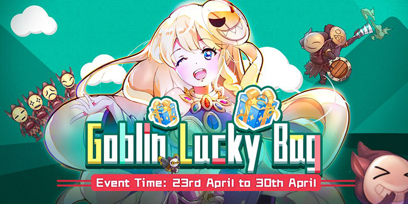
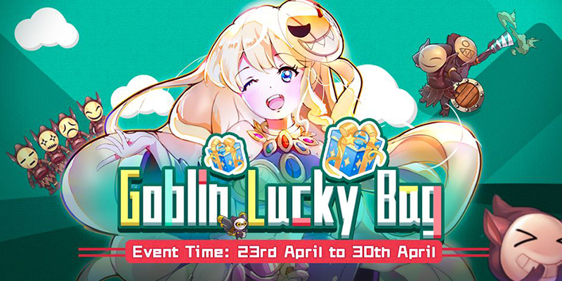
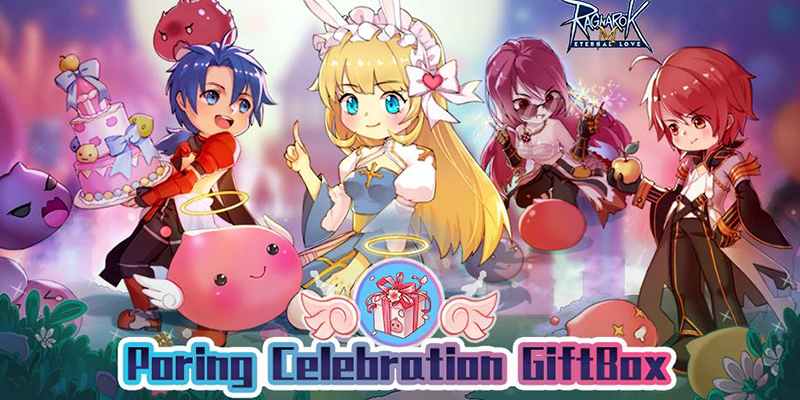
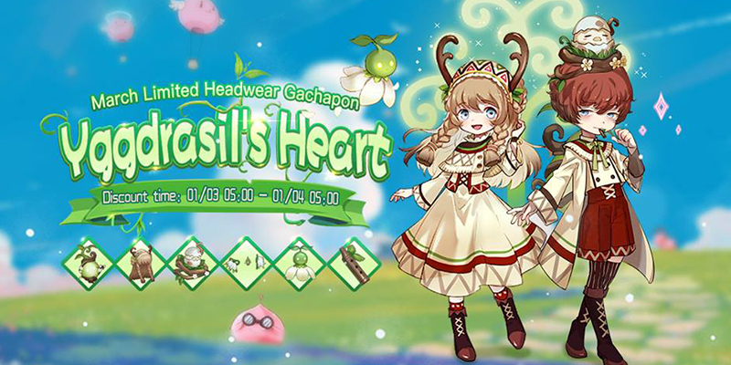
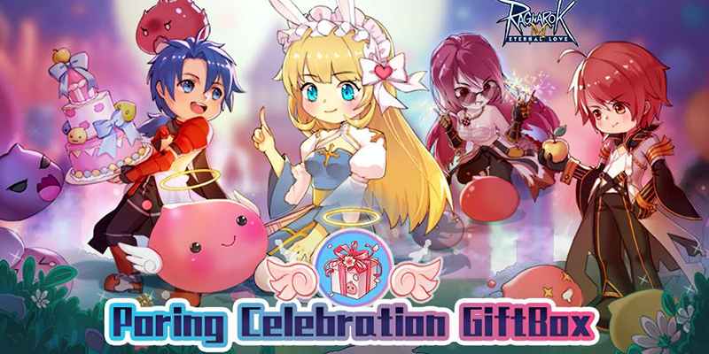
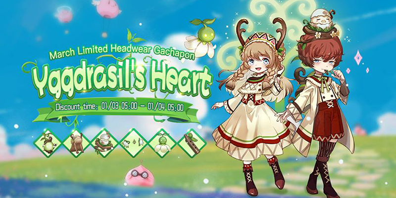

 

Ragnarock Mobile (or alternatively The Final Destiny of the Gods) is a MMORPG game originated from South Korea released on 31 August 2002 for Microsoft Windows. It drew the attention of millions of fans around the world that it even has spawned an animated series, Ragnarock the Animation. The original game has a sequel, Ragnarock Online 2: Legend of the Second, which equally as popular as the first. Player characters exist in a world with a player environment that gradually changes with the passage of time. Major changes in the features and history of the world take place as episodes in the RO timeline. The original game itself has left a big impression and gained very good reviews over the years in which the game developers decided to bring this game into mobile platform, hence Ragnarock Mobile. Ragnarock Mobile brings Rune Midgard to life, reinterpreting the art style that has been beloved by players for over 15 years. Classic gameplay features return with a modern touch. Hold hands, discover the world of Rune Midgard, and experience all the adventures that await in Ragnarock Mobile
Modern Look/Classic Art Style
New and full 3D art that enhances the classic art style. Beautiful designs for the cities of Prontera, Geffen, Payon, and so many more! Amazing characters, mounts, pets, and gear! New weather system to help immerse you into the game experience even further!
Open World Adventure
Learn the epic stories within Rune Midgard through a non-linear narrative! Go anywhere, avoid level limitations, and set out to explore the world. Each NPC hold a unique story!
Hold Hands and Discover Rune Midgard
Detailed and engaging game design: camera controls, holding hands, listen to music. Every design choice is made to improve the player’s gaming experience.
Join a team! Beat the MVPs!
Choose between 5 different main classes and start your journey! Join a team to defeat powerful MVP monsters and get awesome equipment and MVP cards!!